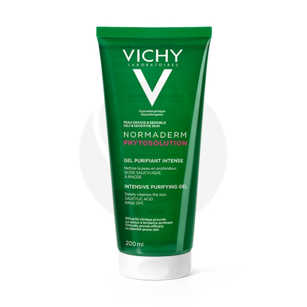
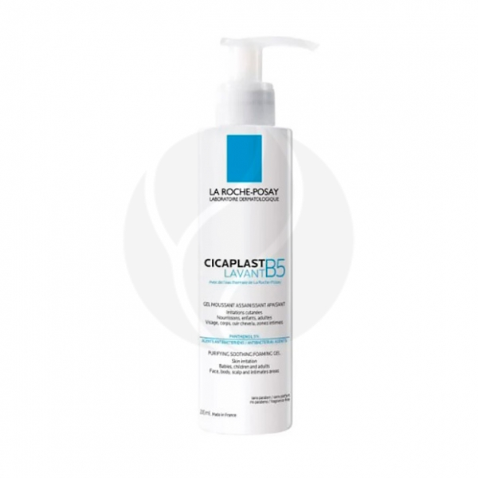

Уход за лицом
| Названия |
Состав |
Цена |
Внешний вид |
| 792 |
AQUA / WATER, COCO-BETAINE, PROPANEDIOL, PEG-120 METYL GLUCOSE DIOLEATE, SODIUM CHLORIDE, SODIUM COCOYL GLYCINATE, DYPROPYLENE GLUCOL, ZINC GLUCONATE, SALICULYC ACID, BIFIDA FERMENT LYSATE, SODIUM HYDROXIDE, SODIUM BENZONATE, PHENOXYETHANOL, COPPER GLUCONATE, CAPBYLYL GLYCOL, TETRASODIUM GLUTAMATE DIACETATE, PARFUM / FRAGRANCE.Code F.I.L.:B227268/1
|
Vichy Normaderm Phytosolution гель очищающий для умывания, 200мл |
 |
| 1165 |
AQUA / WATER, SODIUM LAURETH SULFATE, PANTHENOL, PEG-200 HYDROGENATED GLYCERYL PALMATE, GLYCERIN, COCO-BETAINE, SODIUM CHLORIDE, POLYSORBATE 20, PEG-7 GLYCERYL COCOATE, CITRIC ACID, COCAMIDE MEA, COPPER GLUCONATE, MANGANESE GLUCONATE, PEG-55 PROPYLENE GLYCOL OLEATE, PEG-60 HYDROGENATED CASTOR OIL, POLYQUATERNIUM-11, PPG-5-CETETH-20, PROPYLENE GLYCOL, PRUNUS AMYGDALUS DULCIS OIL / SWEET ALMOND OIL, SODIUM BENZOATE, SODIUM HYDROXIDE, ZINC GLUCONATE
|
La Roche-Posay Cicaplast Очищающий гель B5, 200мл |
 |
| 649 |
Aqua, Propanediol, Giycereth-26, Glycerin, Sodium Levulinate, Хаnthan Gum, Citric Acid, Potassium Sorbate, Sodium Hyaluronate, 1,2–Hexanediol Caprylyl Glycol, Hydroxypropyl Cyclodextrin, Palmitoyl Tripeptide-38
|
b4 Monoserums сыворотка с гиалуроновой кислотой, пептидами и лифтинг эффектом, 30мл |
 |